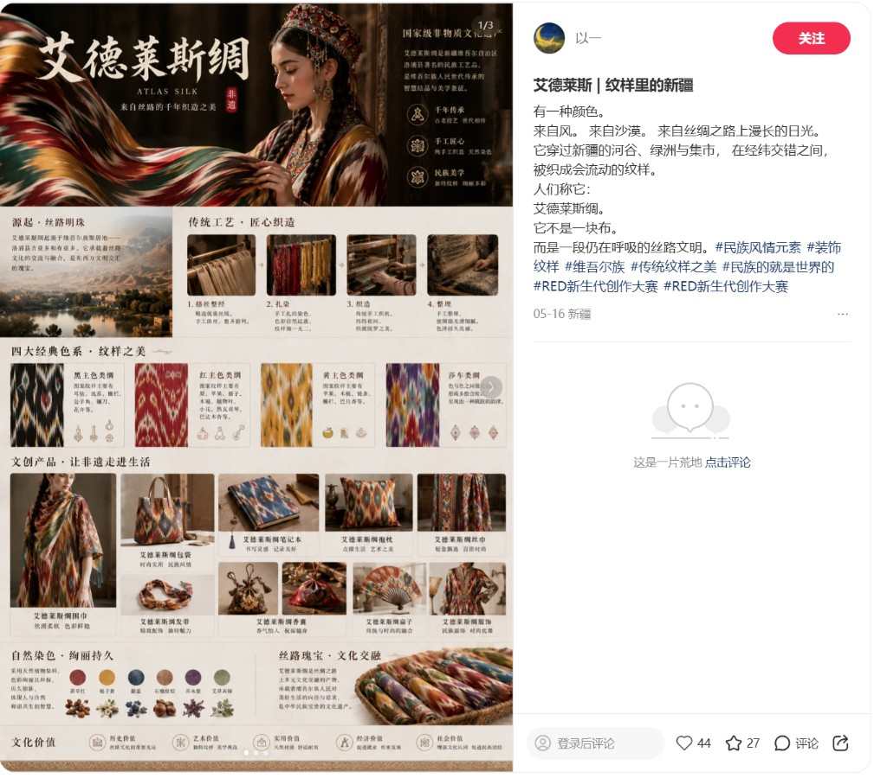

黑色主色类绸
以黑色为基调，纹样主要有耳环、流苏、镰刀、羊角、锯齿、花卉等，庄重典雅，富有民族韵味。
艾德莱斯绸扎经染色技艺与新疆棉纺织非遗，承载千年丝路文明，在当代文创中焕发新声。
艾德莱斯 · 纹样里的新疆
有一种颜色。
来自风。来自沙漠。来自丝绸之路上漫长的日光。
它穿过新疆的河谷、绿洲与集市，在经纬交错之间，被织成会流动的纹样。
人们称它：艾德莱斯绸。
它不是一块布。而是一段仍在呼吸的丝路文明。
艾德莱斯绸是新疆洛浦县著名的民族手工艺品，是维吾尔族人民世代相传的智慧结晶与审美象征。色彩绚丽、纹样独特，被誉为「丝路上的彩虹」，承载着丝路文化交流与民族美学记忆。

3.1
新疆地处古丝绸之路核心枢纽，是东西方商贸往来与文化交融的重要节点，棉纺织技艺随丝路贸易绵延千年、代代相传。自汉唐起，中原棉纺技术与西域本地织造工艺深度融合，逐步形成手工轧棉、土纺土织、天然染色、民族纹样织造等特色技艺体系。历经漫长岁月，棉纺织不仅是当地居民的生产生活方式，更承载着民族文化记忆与丝路文明基因，沉淀出兼具实用性与艺术性的地域纺织文化。
艾德莱斯绸起源于新疆和田地区洛浦县吉亚乡、布亚乡一带，是维吾尔族人民世代相传的织造技艺。和田地处古丝绸之路南道，是东西方商贸往来与文化交融的重要节点，艾德莱斯绸承载着丝路文化的交流与融合，是东西方文明交汇的珍贵见证。
艾德莱斯绸是新疆喀什与和田地区特色的传统手工丝绸，色彩绚丽、虚实对比，图案简洁、抽象又不失生动，深受新疆维吾尔族妇女的喜爱。「艾德莱斯」的维语意为「扎染」，采用我国古老的扎经染色工艺，按图案要求在经纱上扎结，进行分层染色、整经、织绸。染色过程中图案因受染液渗润，自然形成色晕，参差错落，既增加层次感又使每件作品各不相同。艾德莱斯绸还有个雅号「玉波甫能卡那提古丽」，维语意为「布谷鸟翅膀的花」，暗喻它能给人们带来春天万物复苏的美好寓意。
3.2
新疆棉纺织非遗技艺以艾德莱斯绸扎经染色与传统棉织技艺为核心，工序繁复、匠心考究。艾德莱斯绸采用天然植物染料，经丝线扎结、手工染色、拆结织造而成，色彩浓郁通透、纹样流动自然，每一件都独一无二；传统棉纺织则注重纤维精细梳理、纺纱匀度把控与高密织造工艺，确保面料柔软亲肤、耐用透气。
艾德莱斯绸采用天然植物染料，色彩浓郁通透、历久弥新，主要染料来源如下：
纹样之美
艾德莱斯绸按主色调与纹样风格分为四大经典类型，每一种都承载着独特的民族寓意与丝路记忆。
以黑色为基调，纹样主要有耳环、流苏、镰刀、羊角、锯齿、花卉等，庄重典雅，富有民族韵味。
以红色为主，纹样主要有梨、苹果、桃、木槌、植物叶、小花、热瓦普、巴旦木等，热烈喜庆。
以黄色为基调，纹样主要有苹果、木梳、锁链、栅栏、巴旦木等，明快温暖，寓意丰收吉祥。
色彩相互融合，形成多色「台阶」效果，具有跳跃的律动感，是艾德莱斯绸中最具装饰性的品类之一。
3.3
在新疆和田，一批省级、市级非遗传承人坚守初心、深耕技艺，数十年如一日守护传统棉纺织与艾德莱斯织造技艺。他们扎根工坊、潜心钻研，不仅熟练掌握全套古法工序，更坚持带徒授艺、言传身教，将技艺精髓与文化内涵代代传递。同时，匠人们积极参与技艺研发与跨界合作，耐心向年轻设计师解读纹样背后的历史寓意、民族文化与生活智慧，推动传统技艺与现代审美、日常需求深度融合。
南京师范大学「新棉红途·丝路棉韵」调研团走进艾德莱斯绸非遗体验基地，亲手体验传统木模拓印工艺，在传承人指导下操作小型手工织机，从理线、穿综到引纬、打纬，感受代代相传的匠心与耐心。在与基地负责人的交流中，团队深入了解到：艾德莱斯绸虽在新疆本地仍被广泛用于服饰制作，但在更广阔的市场中认知度仍有待提升，传统技艺的传承与创新面临着不小的挑战。这也更加坚定了通过文创设计活化非遗、让艾德莱斯绸文化走向大众的使命感。
3.4
非遗创新作品以传统棉纺织技艺与艾德莱斯纹样为核心，将千年丝路美学与现代生活功能巧妙结合，让非遗之美融入衣食住行，成为传承丝路文化、传递匠心温度的当代载体。
「丝路棉韵」已将艾德莱斯纹样融入杯垫、餐垫、发带、桌面摆画、餐巾纸定位、锅盖隔热把手等日常文创，甄选优质新疆棉为原料，复刻经典民族纹样，兼顾实用与审美。
可在产品中心 · 非遗文创类查看完整产品系列，并体验区块链溯源功能。
丝路瑰宝
艾德莱斯绸是丝绸之路上多民族文化交融的结晶，承载着维吾尔族人民对美好生活的向往，是中华民族珍贵的文化遗产。